Craig Versek (Northeastern University) Parker Woodworth (Food+Future) Alex Meckes (Wyss Institute) Don Blair (Food+Future)
The C12880MA has is an easy-to-use, highly portable sensor module, useful in the range of 340 to 850 nm. We believe that the currently available datasheet for the C12880MA gives the impression that the device requires more sophisticated hardware than is in fact needed in order to effectively operate the device in a wide range of applications; two independent engineering teams initially avoided using it because it seems to require a protocol speed only available on custom FPGA chips.
Below, we demonstrate a basic application of the C12880MA that uses a $8 hobby microcontroller to effectively produce transmission spectra. We recommend that the language in the datasheet and advertising be modified to reflect how truly accessible the module is, thus making the module immediate more appealing to a wider audience.
In our evaluation of the C12880MA module, we relied on the datasheet available here.
The timing chart on page 7 of the C12880MA datasheet strongly suggests that a regular clock pulse is needed at all times in order to operate the device.
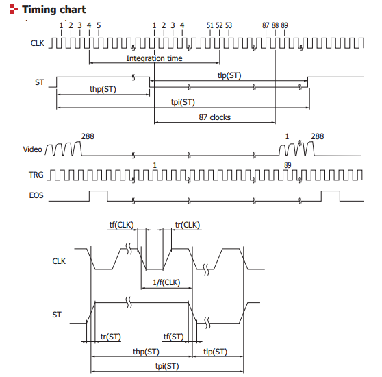
Our first impression (shared with another engineering team at MIT) was that reading off pixel values from the C12880MA with a microcontroller ADC would therefore need to be performed within this ongoing clock pulse schedule -- a constraint that would have required a faster and more advanced microcontroller architecture than any of us was comfortable developing.
We eventually discovered example code, provided by GroupGets, for operating the C12880MA using the Arduino microcontroller. After successfully running this code, we realized that we had misinterpreted the datasheet: after an initial sequence of pulses to prepare the device and set the integration time, the C12880MA then allows individual pixel values to be read off via the ADC at whatever pace is convenient -- a constant clock pulse is not required.
After discovering and studying this example, we were able to write our own C and Python code (described below) to control the device.
Here we present code and hardware for interfacing with the C12880MA using low-cost microcontrollers. The code we developed is compatible with a wide range of microcontrollers that utilize the Arduino platform. Our setup uses the Adafruit Feather:
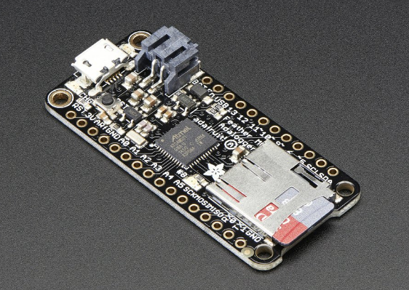
-- but our code is also compatible with:
Our basic setup involves using a low-cost microcontroller to interface directly with the C12880MA. Such a microcontroller can then be programmed to store spectral data locally to an SD card, broadcast spectral data over radio, over send values over a serial connection.
We opted for the latter option: we used the SerialCommand protocol to send commands to the microcontroller, via a Python script that interacts with the relevant serial port on a laptop. The laptop is connected via USB serial to the microcontroller; the microcontroller is connected via wires to the microspec module, as per the C12880MA datasheet:
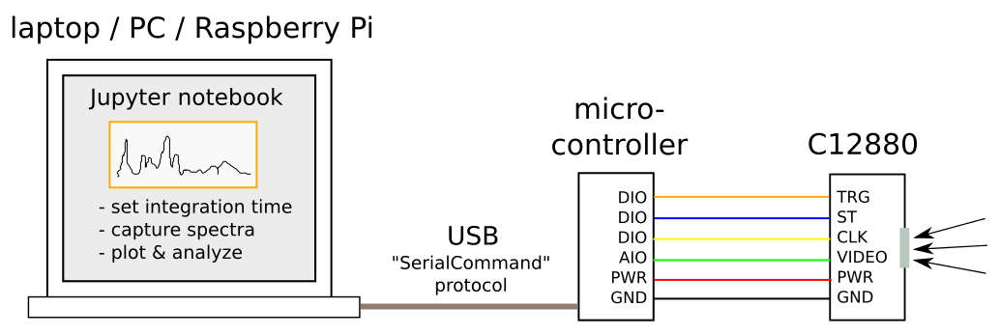
Our Custom firmware consists of Arduino code to control the C12880MA via its custom protocol:
As well as Arduino code to wrap this protocol, and allow for serial communication over USB:
And, finally, Python code to interact with the serial protocol:
Our first test of the C12880 was using a flourescent bulb, to see if we could capture a characteristic spectrum. We used a Jupyter notebook for capturing and analyzing the spectrum). The notebook allows for running the Python code above, which interacts with the C12880 module via USB.
First, the notebook imports the relevant modules, and sets the integration time on the C12880 device:
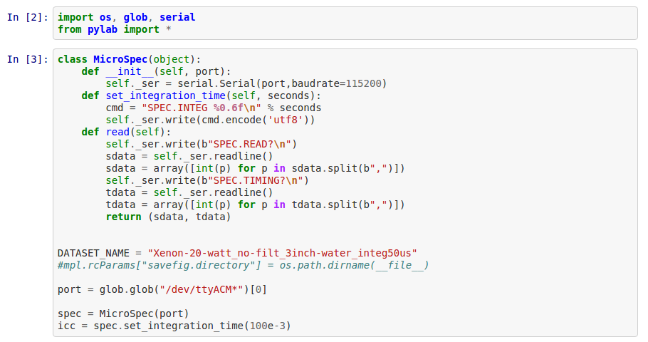
Then, we generating the proper wavelength vector according to the calibration fitting parameters provided by Hamamastu, and capture and plot the spectrum:
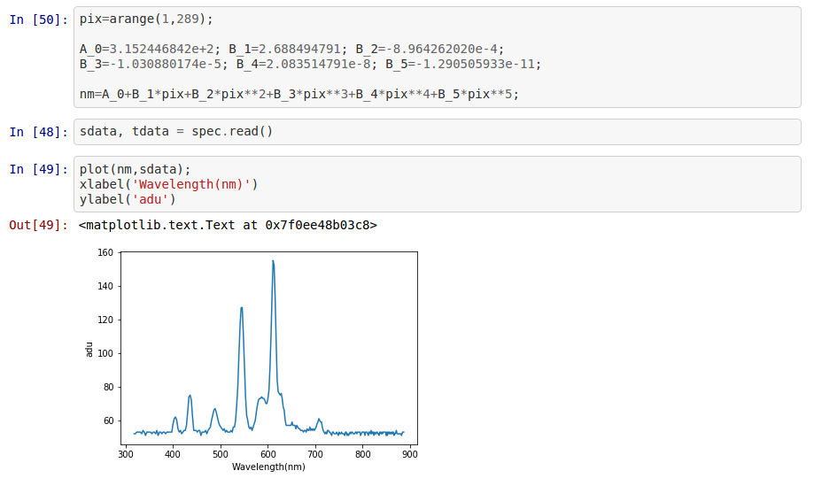
We also used a similar setup in another Jupyter notebook to test our ability to vary the integration time in a straightforward way:
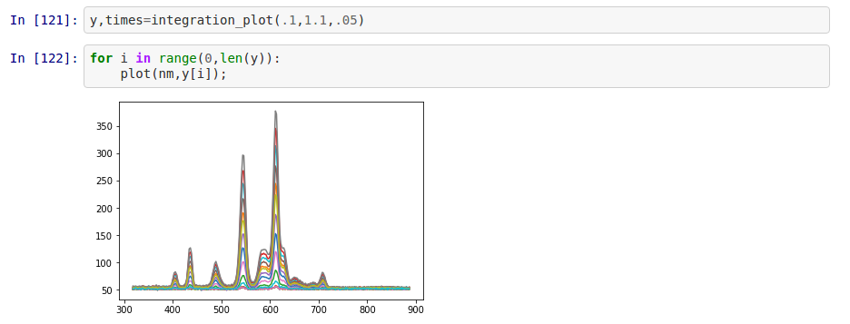
In order to perform some basic transmission spectroscopy experiments, we designed and printed a 3D enclosure for a protoboard version of our C12880 setup. The enclosure accomodates a vial that can be found on Amazon here.
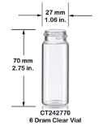
We used Onshape to design the files -- these files are available for copying / modification here.
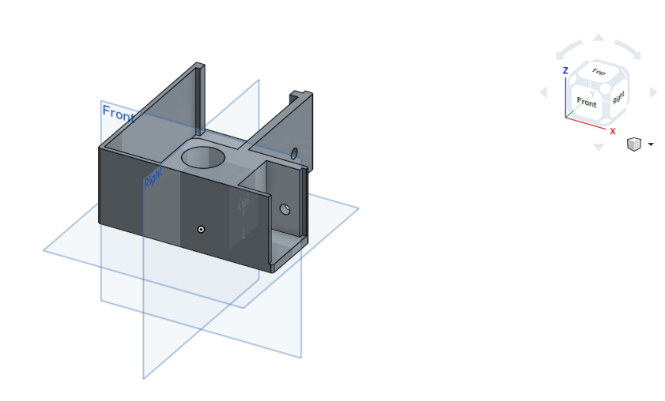
The resultant 3D STL files (suitable for 3D printing) are also available online here.
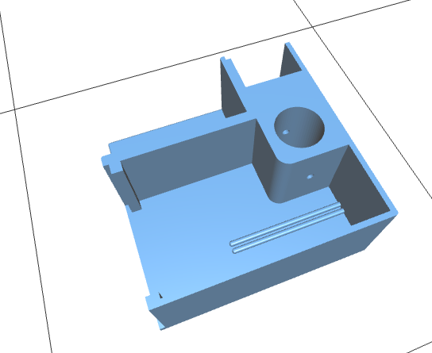
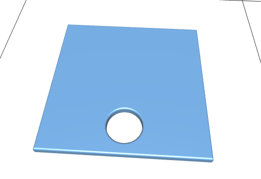
We printed and assembled the 3D enclosure, including the protoboard with the C12880 module, and a USB cable for connecting to a laptop:
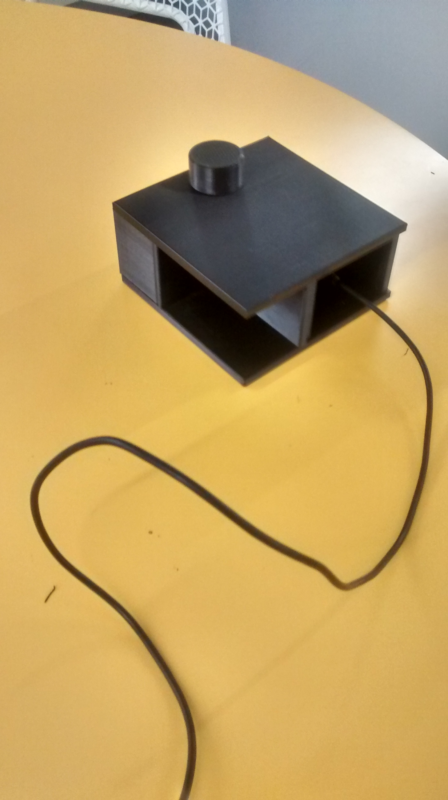
The enclsoure also contains an inexpensive Xenon bulb as a light source:
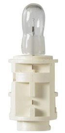
A first test of our transmission spectroscopy setup using the C12880 involved testing vials of various alcoholic beverages. In this case, our 'blank' was a vial container Cambridge tap water.
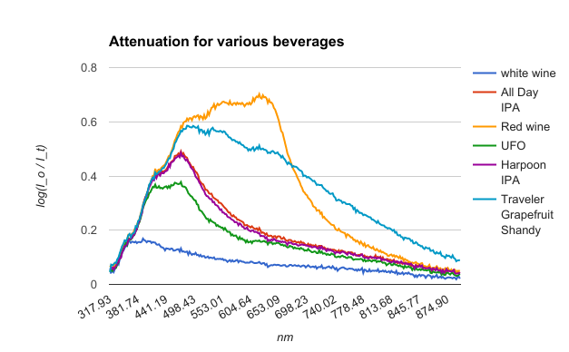
Our final experiment involved assessing the attentuation of various oils, intending to compare various olive oils with canola oil:
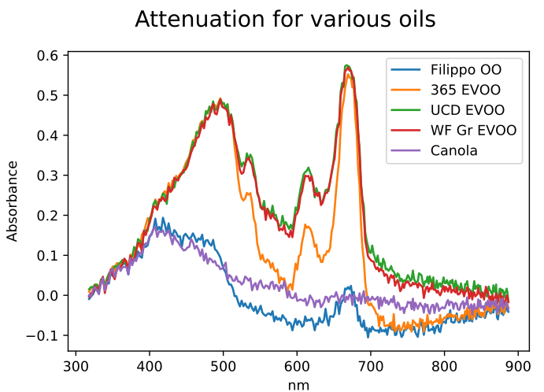
The C12880MA is a convenient, easy to use spectroscopy module. It can be readily used with low-cost microcontrollers, and data can be obtained and analyzed using open source code running on a wide range of computer platforms.